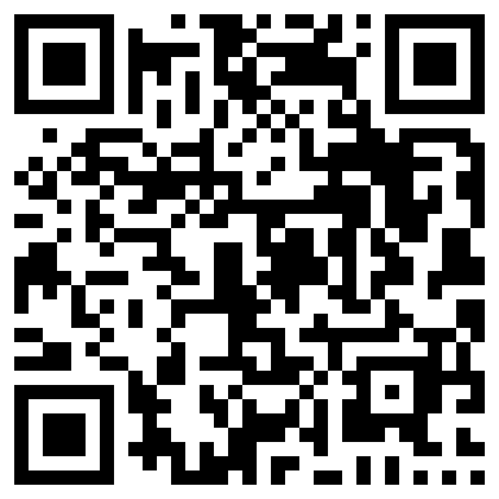

События
События нет: откройте облако и скачайте событие.
Группа дистанций
Дистанции группы
Настройки
Оформление
Тема
Увеличить кнопки и текст — удобнее в перчатке и на ходу.
Отметки
GPS — как только кнопка становится зелёной; QR — как только код попал в кадр.
Вернуть настройки к значениям по умолчанию? Вид и отметки станут как при первом запуске.
Сплит участника
Событие
Протокол
Участников: 0
Жёлтым выделены повторные результаты участника
Участников пока нет
Дистанции в облаке
Загружаю список…
Событие
Координаты пока не получены
Отметка ручная
Кнопка станет зелёной у пункта — тогда нажмите
Отметить при плохой точности?
Профиль

Поддержите, пожалуйста, проект, чтобы он Вас радовал дольше! Особенно, если проводите коммерческие старты. 🙂 Код можно отсканировать телефоном или просто нажать на него — откроется страница поддержки.
VK Сообщество ВКонтакте vk.ru/osportmobileНет ВКонтакте? Нажмите «Войти в другой аккаунт» — на экране VK ID будет вход по номеру телефона, понадобится код из SMS.